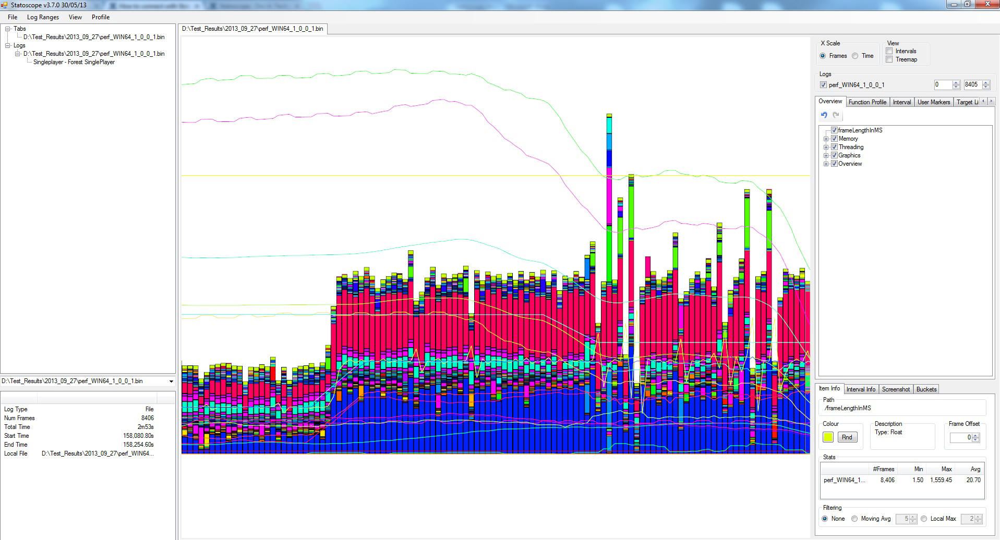
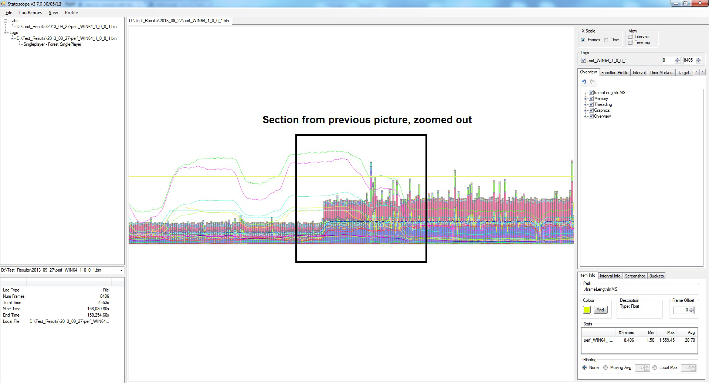
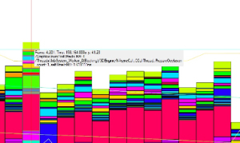
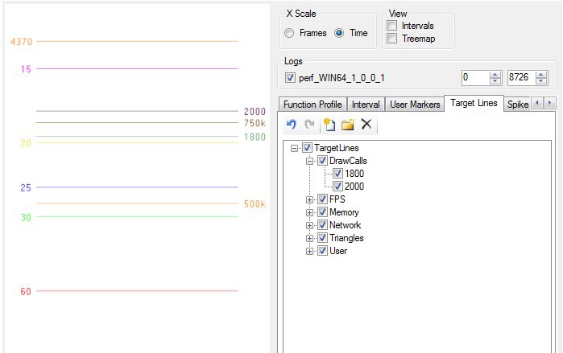
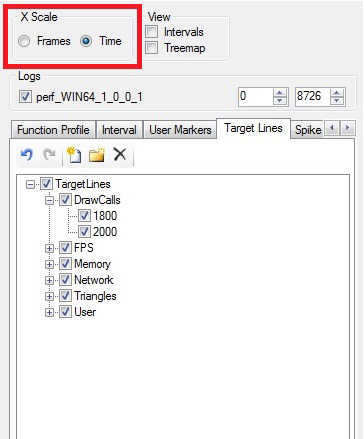

Обзор
В этой статье рассматриваются основы интерфейса Statscope и описывается, как управлять окном просмотра и отображением графика.
Элементы управления видовым экраном
В главном окне графика:
- Щелкните левой кнопкой мыши и перетащите - панорамирование
- Щелкните правой кнопкой мыши и перетащите - масштабирование
- Щелкните правой кнопкой мыши и перетащите влево/вправо — масштабирует вид по горизонтали.
- Щелкните правой кнопкой мыши и перетащите вверх/вниз — масштабирует вид по вертикали.
- Щелкните правой кнопкой мыши и перетащите верхний правый/нижний левый — масштабируется одновременно по горизонтали и вертикали.
Главы:
Режимы печати
На данный момент существует три способа отображения данных:
- Линии (например, частота кадров в секунду, количество вызовов отрисовки)
- Столбцы (например, профили функций, статистика пропускной способности каждого объекта)
- Интервалы (например, статус задач потоковой передачи в очереди)
Кроме того, вертикальные линии и пользовательские маркеры показывают, когда происходят нечастые действия, например. неверный доступ к файлу, уровень загрузки/выгрузки.
Навигация с помощью гистограмм (например, профилирование функций)
Обычно в журнале присутствует гораздо больше кадров, чем можно легко отобразить (одновременно), поэтому при уменьшении масштаба отображается только часть полос. На это указывают полосы, отображаемые с непрозрачностью 50%.
Отображаемые полосы представляют собой реальные кадры, а не композицию нескольких кадров с усредненными значениями. Выбраны самые высокие (для профилировщиков, конечно, самые длинные) из диапазона, который они представляют. Это позволяет легко идентифицировать редкие всплески при уменьшении масштаба.

Обратите внимание на уплотненные полосы рендерится с непрозрачностью 50%

Изображенный на изображении переход является результатом очень небольшого изменения масштаба X (в переломный момент). Дальнейшее уменьшение масштаба привело бы к уменьшению ширины полос до тех пор, пока они снова не достигнут минимального размера, после чего был бы использован следующий уровень LOD.
Это полезно для удаления шума профилирования, такого как синхронизация EndFrame MT или ненужные всплески функций - по очереди, для каждой панели, которую вы хотите удалить, затем нажмите на панель и нажмите космос.
зависание
Вертикальная красная линия обрезается до ближайшего кадра, и всплывающая подсказка будет следовать за курсором над окном, предоставляя подробную информацию о близлежащих элементах.

- В верхней строке для текущего кадра показано:
- Номер кадра
- Время игры (или 0, если недоступно)
- Текущее значение y в пространстве графика
- Во второй строке указывается, на какой элемент вы наводите курсор (если ваша мышь охватывает 2 или более элемента, они также будут перечислены здесь).
- В третьей строке указано время в мс.
Оси/Целевые линии
Слева и справа расположены цветные числа, соответствующие горизонтальным линиям в окне графика. Это позволяет легко визуально сравнивать с целями.
Например, на скриншоте ниже слева отображаются маркеры fps, а справа рисуются звонки. Вы можете указать, какие целевые строки будут отображаться в Целевые линии (верхняя правая группа вкладок (см. ниже)).

X-шкала
Это контролируется переключателем (вверху справа) — его изменение приведет к сбросу представления в соответствии с окном.
По умолчанию ось X линейна по количеству кадров. Это полезное значение по умолчанию (для профилирования функций), поскольку оно делает все полосы одинаковой ширины. Однако иногда более разумно иметь линейность во времени. Обратите внимание, что большой разницы не будет, если только частота кадров не изменится значительно.

Масштаб Y
Также полезно иметь возможность сравнивать статистику самых разных размеров, например. RT нагрузка (десятки мс) или количество вызовов отрисовки (1000).
Чтобы гарантировать, что линии не находятся на расстоянии long друг от друга, необходимо использовать некоторые более важные характеристики, например. Вызовы отрисовки и количество триггеров искусственно масштабируются при построении графика. Обратите внимание, что значения, которые вы видите во всплывающей подсказке, по-прежнему будут исходными немасштабированными.